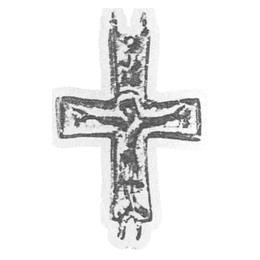

Catalog › CE-0144 · KHA1900-288
Jumătate de cruce-encolpion de aramă cu Răstignirea
XV в. (1401–1500) · loc necunoscut · Colecția B. I. și V. N. Khanenko, Kiev, inv. nr. 288 (numerotarea colecției Khanenko)
single valve of a reliquary cross, aramă; XV в. (1401–1500); find spot unknown; kept at Colecția B. I. și V. N. Khanenko, Kiev.


Identificare
- Categorie
- Valvă izolată
- Material
- Aramă
- Tehnică
- Turnare în relief
Iconografie
- Descriere avers
- Jumătatea din față a unei cruci-encolpion de aramă, cu capete drepte; reprezentarea în relief a Răstignirii; deasupra Răstignirii, se pare, Domnul Savaot.
Datare și atribuire
- Datare
- XV в. (1401–1500)
- Centru
- Necunoscut
Descoperire
- Context
- Colecție (fără context)
- Coordonate
- 50.4421° N, 30.5115° E
- Precizia locului
- Loc de păstrare (loc de descoperire incert)
Păstrare și referințe
- Colecție
- Colecția B. I. și V. N. Khanenko, Kiev
- Nr. inventar
- nr. 288 (numerotarea colecției Khanenko)
- Bibliografie
- B. I. și V. N. Khanenko, Древности русскія. Кресты и образки, вып. II (Собраніе Б. И. и В. Н. Ханенко), Kiev, 1900 [Khanenko 1900], cat. nr. 288, Tabl. XXV, reprodusă la Табл. XXV, fig. 288 (planșa de la p. 30 a PDF-ului).
- Figura
- Табл. XXV, fig. 288
- Planșe
- Khanenko 1900, Табл. XXV (planșă fără paginație tipărită; p. 30 în PDF)
- Observații
- Datare după Khanenko: XV в. Nu se indică locul de descoperire. Locul descoperirii nu e cunoscut cu precizie; punctul de pe hartă marchează locul de păstrare (Colecția B. I. și V. N. Khanenko), nu locul descoperirii. Coordonate: nu sunt date în sursă.
Citare: Corpus Encolpiorum, CE-0144, Jumătate de cruce-encolpion de aramă cu Răstignirea, https://vitaliejosanu1979-ux.github.io/primul-meu-proiect/piese/KHA1900-288/ (accesat 2026-10-17).